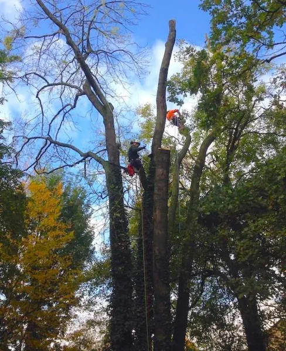
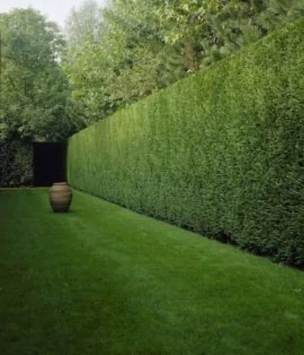
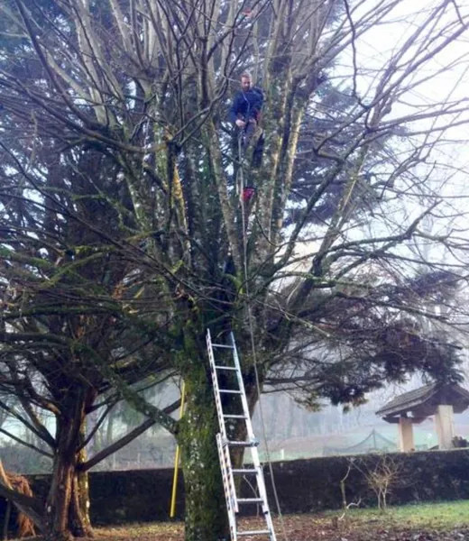
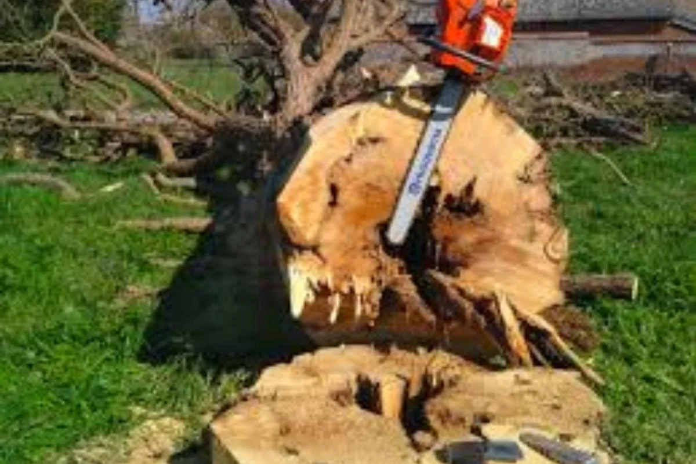

Élagueur à La Madeleine · 59110
Vous habitez La Madeleine et vos arbres ou votre haie ont besoin d’un sérieux coup de propre ? Basé à Lambersart, tout près, le Ch’ti Élagueur intervient chez vous pour l’élagage, l’abattage, la taille de haies, le dessouchage et l’entretien du jardin, avec évacuation des déchets verts.
Notre savoir-faire
Élagage et abattage à La Madeleine
Branches mortes, ramure trop dense, arbre penché ou dangereux : nous élaguons ou nous abattons selon l’état de l’arbre, en toute sécurité. Près d’une maison, l’arbre est démonté par morceaux pour ne rien abîmer.
Des haies nettes à La Madeleine
Une haie bien taillée embellit tout le jardin. Nous taillons côtés et dessus, même sur les grandes hauteurs, à prix modérés, et nous laissons le trottoir propre.

Un jardin entretenu toute l’année
Remise en état d’un jardin laissé à l’abandon, entretien régulier, dessouchage : nous adaptons nos passages à votre jardin et à la saison.





Élagueur à La Madeleine
Un chantier rendu propre
Branches, troncs, tailles de haie et feuilles : à la fin de chaque intervention, nous ramassons et nous évacuons les déchets verts. Vous n’avez rien à porter à la déchetterie.
Demander mon devis gratuitVotre projet
Parlons de votre projet
Un arbre à élaguer, une haie à tailler, une souche à retirer à La Madeleine ? Le devis est gratuit et sans engagement : appelez le 06 04 43 98 99 ou écrivez-nous avec le formulaire.

Nos services à La Madeleine
Sept savoir-faire pour vos arbres
Élagage, abattage, haies, dessouchage, entretien et évacuation des déchets verts : le Ch’ti Élagueur intervient à La Madeleine (59110).
 01
01Élagage d’arbres
Des arbres sains, sûrs et bien dessinés.
 02
02Abattage d’arbres
Même les arbres dangereux, en toute sécurité.
 03
03Taille de haies
Des haies nettes, à prix modérés.
 04
04Taille d’arbres
Arbres d’ornement et fruitiers, taillés avec soin.
 05
05Dessouchage
Souches retirées, terrain dégagé.
 06
06Entretien de jardins
Jardins et espaces verts, toute l’année.
 07
07Évacuation des déchets verts
Branches, troncs, feuilles : on emporte tout.
Zones d’intervention
Nous intervenons aussi près de chez vous
Depuis Lambersart, le Ch’ti Élagueur se déplace à La Madeleine et dans toutes les communes voisines.
Lambersart (59130) · Nord et Pas-de-Calais